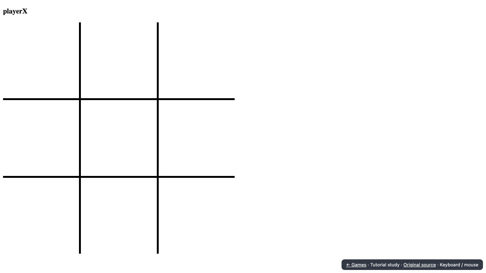

JavaScript · HTML Canvas
Tic Tac Toe
Overview
Take turns marking a three-by-three grid and try to complete a line before the opposing side. Every choice changes both the available winning routes and the opportunities that need defending.
The compact board makes the whole state of the game visible at once. Play involves recognizing immediate threats, creating a line, and preventing the other side from doing the same. Any local or computer-opponent options are specific to the published version and are identified in its game summary.
What it includes
- Turn-based grid
- Three-in-a-row objective
- Win and draw states
